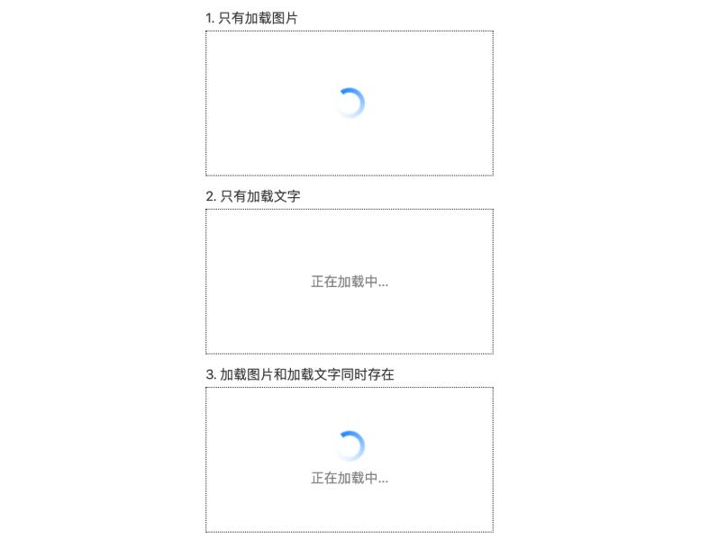

only-child伪类
<!-- 1. 只有加载图片 -->
<div class="cs-loading">
<img src="./loading.png" class="cs-loading-img">
</div>
<!-- 2. 只有加载文字 -->
<div class="cs-loading">
<p class="cs-loading-p">正在加载中...</p>
</div>
<!-- 3. 加载图片和加载文字同时存在 -->
<div class="cs-loading">
<img src="./loading.png" class="cs-loading-img">
<p class="cs-loading-p">正在加载中...</p>
</div>
.cs-loading {
height: 150px;
position: relative;
text-align: center;
/* 与截图无关，截图示意用 */
border: 1px dotted;
}
/* 图片和文字同时存在时在中间留点间距 */
.cs-loading-img {
width: 32px; height: 32px;
margin-top: 45px;
vertical-align: bottom;
}
.cs-loading-p {
margin: .5em 0 0;
color: gray;
}
/* 只有图片的时候居中绝对定位 */
.cs-loading-img:only-child {
position: absolute;
left: 0; right: 0; top: 0; bottom: 0;
margin: auto;
}
/* 只有文字的时候行号近似垂直居中 */
.cs-loading-p:only-child {
margin: 0;
line-height: 150px;
}
